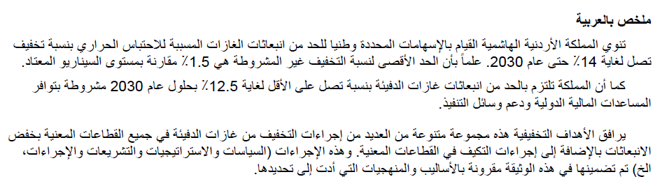

بسم الله الرحمن الرحيم
Jordan nationally determines to reduce its greenhouse gas emissions by a bulk of 14 % until 2030. This contribution of GHGs reduction will be unconditionally fulfilled at, maximally, 1.5 % by the Country’s own means compared to a business as usual scenario level.
However, Jordan, conditionally and subject to availability of international financial aid and support to means of implementation, commits to reduce its GHGs emissions by additional, at least, 12.5 % by 2030.
The outcome targets above are accompanied by a diverse combination of numerous GHGs cutoriented actions in all involved sectors of emissions in addition to the adaptation actions in targeted sectors. These actions (policies, strategies, legislations, measures, etc) are articulated in this document. The methodological approaches underlying Jordan’s INDC are included in this communication as well.
The Government of the Hashemite Kingdom of Jordan (GoJ) welcomes you to Jordan’s diversified (a wide rainbow of combination of outcomes and actions) INDC. Jordan believes that such contribution sets an ambitious target, proportionate to the circumstances of such a small developing country if necessary financial support and means of implementation made available to the country to implement such contribution. The unconditional outcome target is aiming at reducing Jordan’s greenhouse gases (GHGs) emissions by 1.5 % by 2030 compared to a business as usual scenario levels. The conditional outcome target is aiming at reducing Jordan’s GHGs emissions by 12.5 % by 2030. The two targets will be achieved based on implementing at least 70+ projects (43 sectoral projects resulted from the mitigation scenario assessment articulated in the 2014 Third National Communication Report to UNFCCC and another around 27+ sectoral priority projects proposed concurrently or newly planned and not listed in the TNC Report, i.e., proposed after the development of the TNC. The later group of projects was disseminated to INDC document by involved stakeholder line ministries and organizations in response to INDC formulation process. This 70+ project 14-percent INDC of Jordan, of which many projects are now under execution by relevant institutions, will be implemented under the guidance of the overarching national Climate Change Policy of the Hashemite Kingdom of Jordan 2013-2020. The climate change policy of Jordan is a holistic nation-wide policy encompassed strategic objectives and measures for mitigation and adaptation. It is considered the first of its kind in the Arab Region and, in terms of sectoral coverage, in the Middle East, covering the pre-2020 period, which was developed voluntarily as a demonstration of the self-commitment of a small yet an ambitious country. The Policy itself as well will be extended at the end of its term to 2030 (another ambitious action-style contribution of Jordan) to concurrently go in line with and serve as an overarching umbrella guiding and monitoring the implementation of the 70+project 14-percent GHGs emission reduction pathway of activities until 2030.
This combination of a holistic national-level Policy aiming at guiding sectoral objectives and measures, accompanied by an ambitious mitigation target decided upon by GoJ, which could be met systematically if sufficient support is effectively provided to the country, will be a first, yet a serious step in line with the 2°C objective.
The estimated cost to reach the 14% target is totaling USD 5,700,000,000 from which GoJ has already secured
USD 542,750,000 by its own means to meet the unconditional target; which means the Country is in need of USD 5,157,250,000 to fulfill its conditional target.
With regard to adaptation to climate change and before developing of the National Climate Change Policy of Jordan 2013-2020, which advanced concrete strategic objectives, measures, and instruments to adapt the Country to climate change impacts in each involved sector (water, coastal areas, agriculture/food security, health, tourism, biodiversity, and socioeconomic situation/poverty), Jordan conducted (2009-2013) a major joint program of water and health sectors’ adaptation namely “Adaptation to Climate Change to Sustain Jordan’s MDG Achievements” with a total budget of USD 4.13M. The program’s outcomes were to develop sustained access to improved water supply sources, despite increasing water scarcity due to climate change and to strengthen the capacity for health protection and food security under conditions of water scarcity. Moreover, and in continuation of national actions, the Country mainstreamed climate change in its National Strategy and Action Plan to Combat Desertification (2015-2020) which was recently aligned with the global UNCCD 10 year Strategy. Jordan also mainstreamed climate change into the National Biodiversity Strategy and Action Plan (2015-2020), which was also recently aligned with the global CBD-10 year Strategy.
Finally, all sustainable development-oriented plans in the country have led to a crowning national effort, which will be the development of a national strategy and action plan for transitioning towards the green economy in Jordan (2016-2025) which is currently under development. All of such climate change-response actions demonstrate the extraordinary efforts and the size of involvement of such a small country in the fight against climate change.
Based on the base year 2006, Jordan’s share in global greenhouse gas emissions was 28,717 Gg of CO2 eq., which is 28.72 million ton (Mt) of CO2 equivalent (detailed breakdown of emissions shares per surveyed sectors and covered gases is provided in the TNC Report to UNFCCC and the accompanying inventory submitted in late 2014). The Country’s bulk share of GHGs represents only around 0.06% of global total according to a global GHGs analysis conducted in 20102. According to World Bank, the CO2 metric tons per capita emission is 3.4 in 2010.
As Figure 1 below illustrates, energy (including transport)-related activities have the dominant share of GHGs emissions in Jordan totaling 73% followed by almost close percentage for both waste and industrial activities totaling 10% and 9% respectively. Activities from Agriculture and LULUCF have the lowest, also close percentages, of 5% and 3.0 % respectively.
Figure 1. Jordan’s greenhouse gas emissions by sectors in 2006.
These emissions are expected to grow according to the 2006 baseline scenario used in the TNC (2014) to 38,151 Gg, 51,028 Gg and 61,565 Gg of CO2 eq. in the years 2020, 2030 and 2040 respectively due to normal growth models. The role of the energy sector and sub-sectors as the leading emitter of GHGs is expected to increase in the future from 73 % of total emissions in the year 2006 to 83 % in the year 2040 according to a BAU scenario. Therefore, it is anticipated to focus the mitigation efforts of the Country on this sector.
The baseline scenarios was based on 2014 conditions, which were deeply relying on imported fossil fuel and the delay in renewable and alternative energy projects as well as interruptions in gas supplies. Now, in 2015 the conditions have changed with more emphasis on renewable and gas. We believe when Jordan develops its BUR based on 2010 inventory the baseline scenario will lead to a peak year.
Historically, Jordan was amongst the most active countries in the region with regard to involvement in international climate change efforts and response actions. Jordan was amongst the first group of developing countries to ratify the UNFCCC and make an accession to the Kyoto Protocol in 1994 and 2003 respectively. In response to its obligations towards the UNFCCC, Jordan prepared and submitted its Initial National Communication on Climate Change in 1997 and the Second National Communication in 2009. Moreover, Jordan has launched its Third National Communication Report to UNFCCC in December 2014. In line with that, Jordan has systematically continued its efforts in responding to climate change by developing and starting implementing national strategies and policies; of which Jordan, supported by UNDP, has developed a national climate change policy in 2013, the first comprehensive policy in the Arab Region and the Middle East as elaborated above.
However, Jordan, as a non-Annex I country, has, so far, no commitments for GHG emission reduction targets. Nevertheless, Jordan believes that there is a large potential for mitigation, even though Jordan’s total GHG emissions are very small in absolute terms compared to other countries as indicated above. Developing fullfledged NAMA projects and capacity building in establishing and running an effective MRV system both on macro level and on sectoral and activity levels are highly needed since MRV is looked at as prerequisite for developing NAMAs. More dedicated efforts are needed to provide institutional capacity strengthening for data collection and management particularly with regard to mitigation. There is good improvement in renewable energy policies, strategies, laws and by-laws formulation but improving robust implementations still needs further work. However, there is now so much activities going on renewables in the Country. Private sector engagement in climate change activities is still not at the expectation level but slowly improving and good progress is taking place in investment in renewable energy sector particularly. However, the overwhelming majority of climate initiatives and projects in Jordan are still donor-driven. Thus, the pledged reduction of emissions by 2030 of 14 % compared to a BAU scenario levels still require substantial international financial support and a paradigm shift in national planning that includes the allocation of domestic resources for low carbon emission growth strategies.
Climate change is expected to affect sustainable development, economic growth and society. Based on outcomes from the latest Third National Communication Report to UNFCCC (2014), serious vulnerability and impacts results are expected based on modeling and projections analyses. Predicted trends indicated that the annual precipitation tends to decrease significantly with time. Simultaneously, the mean, maximum and minimum air temperature tends to increase significantly by 0.02, 0.01, and 0.03 °C/year, respectively. On the other hand, the relative humidity tends to increase significantly by an average of 0.08%/year. In addition, the dynamic projections predicted more extremely likely heat waves and likely drought events, dry days, and potential evaporation among other potential impacts (TNC 2014).
Located at the heart of the Middle East, Jordan is a small upper-middle income county with scarce natural resources (in particular water), and a small industrial base within the service sector (the later contributes around 70% of GDP) which dominates the economy. The country is shaped by its geography, history, geopolitics and scarcity in natural resources. The government identified poverty and unemployment as two of the most important challenges the Country faces. The challenge of meeting the increasing energy demands is another pressing issue. Before elaborating on the expected GHGs growth patterns and mitigation potential, it is important to present some information about Jordan especially in light of current development challenges impacted by economic and regional political situation.
The demographic characteristics of the Jordanian population show that the Jordanian development process faces a challenge in providing basic needs in such a developing country. Jordan has a total population of approximately 6.388 million. However, over the past decade, Jordan has seen considerable economic and social achievements; GDP per capita has increased from JD (1512) in 2004 to about JD (3670) in 2014. Jordan has also invested significant resources in infrastructure facilities serving the citizens, made remarkable human development achievements, maintained stability and attracted foreign and domestic investment. These achievements were accompanied by some challenges that are still unresolved, mainly the development gap between governorates, high unemployment rates, especially among young people and the relative decline in certain competitiveness indicators. However, the general situation in Jordan, the level of infrastructure, and the institutional development help Jordan to leap ahead and start addressing and overcoming challenges. His Majesty King Abdullah II has highlighted the most prominent challenges, the way to the future and the social and economic model that the country aspire in his letter to the government to develop a vision for the next decade.
In His Majesty Abdullah II Ibn Al Hussein’s Opening Address at the World Economic Forum on the Middle East and North Africa, 2015, His Majesty highlighted the importance of securing reliable sources of energy saying
“We also need to find the opportunities in challenge. To define our region by problems and not solutions is to miss huge potential. Rapid urbanization, education requirements, water scarcity, the need for reliable energy, building health and transport infrastructure: these are critical issues for most of our countries.”, “In Jordan, we are looking to new projects in urban development, water infrastructure, and a diversified, longterm energy platform” “Today, Jordan is bringing solar heating and lighting to our schools and offices, electric vehicles to our streets and industries, a digital system for our health sector, e-payments for transactions, even iris recognition for channeling assistance to refugees. These are just a few examples. You at this Forum, and your peers in the region, will create many, many more.”
The high annual growth rates of demand for energy (4-5% for primary energy and 5.3% for demand for electricity) for the period 2015-2025 remains one of the highest in the world and thus is considered one of the Kingdom’s most significant development challenges. In 2013, total primary energy consumed in Jordan was about 8.2 million tons of oil equivalent, 82% of which were crude oil and oil derivatives, 11% natural gas, 3% renewable energy and imported electricity and 4% petroleum coke and coal. The national energy sector’s main concern is the provision of adequate energy for development with the least possible cost and best quality. The energy sector still suffers from extreme fluctuations of oil prices and the ability to secure constant and sustainable energy supply for the country.
While Jordan has achieved many sustainable development goals, sustaining these results and reducing the burden of the energy sector on economic and social development will increasingly depend on the transition to a sustainable energy future. The high cost of importing energy puts a heavy burden on the public budget already constrained by running costs. Since the prices of energy imports have increased with high risk in constant supplies, this situation spurred governmental action to improve energy efficiency and provide additional energy resources. The running policy of the GoJ in the field of energy was shaped through the adoption of the Updated Master Strategy of Energy Sector in Jordan for the period 2007-2020. The main goals of the Strategy are to secure reliable energy supply through increasing the share of local energy resources such as oil shale, natural gas in the energy mix, expanding the development of renewable energy projects, promoting energy conservation and energy efficiency and awareness and generating electricity from nuclear energy. The options include as will a diversification of Liquefied Natural Gas (LNG) possibly from Qatar or the new Leviathan Basin in the Eastern Mediterranean (thus, a new LNG port is already operational in Aqaba); new oil and gas pipelines from Iraq; and search for new shale potentials.
The running energy strategy is to transform the energy mix from one heavily reliant on oil and natural gas to one more balanced with a higher proportion of energy supplied by oil shale and renewable sources. The energy strategy sought to increase reliance on local energy sources to 25 % by 2015, and up to 39 % by 2020 as set in 2020 Energy Strategy. Placing more emphasis on the utilization of renewable energies will alleviate the dependency on the traditional energy sources, especially oil, which is imported from neighboring countries. This will also be paralleled with the reduction of energy produced from oil from 82% in 2013 to reach 50% in 2020.
The 2013 Arab Future Energy Index (AFEX) showed that Jordan has made progress in this regard, ranking second in the Arab region for renewable energy trends and the second for energy efficiency. The 2012 Energy Efficiency and Renewable Energy Law no. 13 is also a key enabler, providing incentives for sustainable energy solutions as Jordan seeks to increase renewable energy from 2% of overall energy in 2013 to 10 % in 2020, and to improve energy efficiency by 20 % by 2020.
The influx of Syrian refugees into Jordan has increased the demand for energy and electricity. In addition to long-standing structural challenges in the energy sector in terms of supply, demand as well as management, Jordan also faces exacerbating factors resulting from the increase of Syrian refugees, who comprise nearly 13 % of Jordan’s 6.388 million population. Although Syrian refugees and forced migrants fall within the lowerincome bracket and average energy consumptions remain less impactful on the broad energy challenges in Jordan relative to core energy users in the Country, total residential energy consumption has risen significantly.
From another corner, the development of industrial and services sectors in Jordan, accompanied with the increase of Jordanian population and the increase of numbers of vehicles has resulted in an increase in the GHGs and pollution emitted to the ambient air in the last decades. Transport sector in Jordan is a major contributor to increasing emissions of greenhouse gases. With a percentage of 16% of emissions share to the bulk GHGs of Jordan, transport sector is the second source (after energy sector emitting 28%) of GHGs emissions in the country. The Ministry of Transport (MoT) launched a long-term national strategy 2014 in which the sustainable transport is one of its pillars. Mobility of people and freight is a widely shared goal amongst transport policy makers in Jordan; therefore, the MoT is obliged to form its policies in line with sustainable transport trend. One of the major objectives of the long-term transport strategy at MoT is to increase the total number of commuters using public transport as a percentage of the total number. In 2010 this percentage stood at 13 percent, 9 of which were taxies. It is anticipated that this percentage would increase by implementing programs and projects that will enhance the quality of service of the whole public transit network to 25 percent by 2025.
The environmental sustainability of Jordan’s transport strategies are focused on three main aspects, namely emissions, energy consumption, and traffic reduction. MoT believes it is important to reduce all emissions from transport sector (i.e. CO2, CO, PMx, NOx expressed in tons per day). MoT will also work on reducing percentage of fuel consumption (in tons per day) which might be achieved through the implementation of the transport strategy. With regard to traffic reduction, Mot will work on this contribution in terms of reduction of V-km at national level and in densely populated areas by type of vehicle (i.e. car, HGV, LGV and expressed in 1000v-km per day). MoT believes that introducing higher order public transit systems such as bus rapid transit (BRT) systems is key to improving the transport service in the country. MoT is already taking on the Zarqa- Amman project that would link to the Amman BRT system that is being implemented. Initial steps are being taken to tackle other probable viable routs including Salt- Sweileh- Baqaa.
Serious measures are being taken to implement the national railway system, which would be a cornerstone of the planned multimodal network that would play a major role in the ease of the transport of goods within the country and the surrounding region. With such system in place, the reductions of emissions from these activities are obvious. MoT believes that utilizing latest technology in the transit sector can add to the efficiency of operations; implementing applications that connect taxies to customers for instance can reduce idle time thus reducing energy usage thereby reducing emissions. Acquiring accurate data for origin and destination of passengers can pave the way for better rout planning, thereby increasing the ride ability and shortening trip distances. Moreover, MoT is targeting to increase transport sector ridability. Adopting and implementing policies related to fleet characteristics would also enhance efficiency and reduce emissions. Issues related to fleet service life, replacement incentives, and reconfiguration of technical elements will have a positive effect on energy consumptions and reducing CO2 and other greenhouse gases emissions.
One of the main demographic and thus political determinants for Jordan and thus development implications is migration. Being at the crossroads of two major areas of instability and prolonged conflicts, Jordan has become the destination for several waves of forced migrants from Palestine and lately from Iraq and Syria. Since 2011, and until February 2015 Jordan has hosted over 650,000 refugees from Syria, with approximately three-quarters living in urban areas across the Country and one-quarter living in refugee camps in the northern region. The waves of refugee influxes are still on going, as the conflict has no foreseeable solution. Based on data from Department of Statistics (DOS) obtained at the end of 2014, the total number of unregistered Syrian people in Jordan is 750,000 people while the registered number with UNHCR is 650,000. The grand total number of Syrian in Jordan is 1.4 million persons.
Jordan has been affected by not only the adverse regional and global developments such as the political situations in the area but also by the continuing global financial and economic crises as well as the rise in commodity prices in the international markets. The rapid growths in economic activities, population and successive influxes of refugees over the last decade have imposed additional demands on energy resources. As matter of fact, Jordan is a country with limited indigenous energy resources. Jordan imports about 97% of its energy requirements, which includes mainly crude oil, oil derivatives and natural gas. Local sources cover the remaining 3% of requirements with renewable energy contributing only a small proportion to this mixture. This 97% import of energy needs is accounting for almost 20% of the GDP, which makes the country completely reliable on and vulnerable to the global energy market.
Recently, the GOJ launched in mid of 2015 Jordan’s 2025 National Visions and Strategy, which charts a path for the future and determines the integrated economic and social framework that will govern the economic and social policies based on providing opportunities for all. Jordan 2025 includes more than 400 policies or procedures with performance indicators (including energy, water, waste, agriculture and other mitigationoriented sectoral policies, procedures and indicators) which will lead to reduction of GHGs that will be implemented through a participatory approach between the government, business sector and civil society. Most importantly, the 2025 National Vision and Strategy has set a 11% Key Performance Indicators (KPIs)style “targets” for renewable energy share in the total energy mix in 2025 as well as increasing the percentage of the contribution of natural gas in the energy mix to 39%. Quoted from the Vision, “There is no doubt that given the current financial pressures on our economy and its people and the elevated and continuing level of insecurity and conflict in our region, Vision 2025 is ambitious.” Jordan is a small open economy with population growth rate much higher than the global average. Therefore, due to the small size of our local economy, it is difficult to deliver high-quality sustainable growth and create the number and quality of jobs needed to employ Jordanians over the next decade and beyond. Although we have made significant progress over the past decade, significant challenges lie ahead as we seek to achieve greater and better quality prosperity for all Jordanians.
The estimated cost to reach the 14% target is totaling USD 5,700,000,000 from which GoJ has already secured USD 542,750,000 by its own means to meet the unconditional target, which means the Country is in need of USD 5,157,250,000 to fulfill its conditional target.
iii. Transport is by far the largest energy consumer in the Kingdom and the second emitter of GHG according to the 3rd National Communication Report. Main programmes and projects under transport sectors are:
Baseline scenario/base year: A Business as usual scenario was used (but 2006 was used as a base year for GHG inventory in the TNC upon which the core component of Jordan’s INDCs were based).
Emissions in base year: 28.72.3 million ton (Mt) of CO2 equivalent (a sectoral breakdown of emissions shares per surveyed sectors is provided in Figure 1 above but a detailed sub-sectoral and gas type breakdowns of the GHGs are provided in the TNC Report and the accompanying inventory submitted to UNFCCC in late 2014).
Time frame of the commitment is until end of 2030. The quantified commitment by 2030 is relevant to the GHGs reduction targets while the other packages of mitigation actions (and tied KPI-based targets) are anticipated to be achieved by 2025 based on timeframe adopted by Jordan 2025-a National Vision and Strategy (launched in 2015).
Gases covered: Carbon dioxide (CO2); Methane (CH4); Nitrous oxide (N2O); Sulphur hexafluoride (SF6); Perfluorocarbons (PFCs); and Hydrofluorocarbons (HFCs).
Base year for gases covered: all 2006.
Sectors covered: energy (including transport), waste, industrial processes, agriculture and land-use, land-use change and forestry (LULUCF) and solvents.
Furthermore, GHG emissions from bunker fuels have also been estimated and reported as a memo item (these emissions are not included in the national GHGs inventory total). In addition to the sectoral approach, the reference approach has also been used for the estimation of CO2 emissions from the overall fuel consumption figures for the time frame between 2000-2010.
Jordan’s well organized and institutionalized planning process for combating climate change has started in 2013 by voluntarily developing the National Climate Change Policy for the Hashemite Kingdom of Jordan 2013-2020 as mentioned before. The provisions of this Climate Change Policy are being integrated/mainstreamed in environmental, social and economic policies and legislation in the Country. In particular, the Policy’s provision will be integrated in the National Green Growth Plan and Implementation Roadmap, which is currently under development and will be launched in 2016 and will cover six sectors (energy, water, waste, transport, tourism and agriculture). The INDC proposed for Jordan is envisioned as the core element of the said National Green Growth Plan. This helps dual implementation of the INDCs and the Country’s green growth plan.
The National Committee on Climate Change is mandated to monitor the progress in the implementation of the Climate Change Policy on the national level and thus the INDC. A large share of the objectives of the Policy will be implemented through sector strategies under the responsibility of the sector’s ministries (energy, water, agriculture, health, and others). Their progress will be monitored by each involved sector on the basis of the specific monitoring framework adopted in the respective sector’s policies and strategies.
The national implementation will be based on the time frame of the commitments, which is until end of 2030 for the GHGs reduction targets and until 2025 for the other packages of mitigation actions (and tied KPI-based targets) based on timeframe adopted by Jordan 2025 Vision. The GHGs reduction targets’ achievement will be tracked through the information in Jordan’s national inventories and Biennial Update Report (BURs). The preparation of the first BUR for Jordan will start in 2016 and is expected to be completed in late 2017. Jordan will strive to put in place a functioning MRV system for GHG inventory and mitigation progress based in the appropriate institutional and technological settings available. For the other packages of mitigation actions (and tied KPI-based targets) proposed in Jordan 2025, the Vision has set a “Performance Management Framework for Implementation” to assure that the policies, measures, and KPIs articulated in the Vision will be fulfilled. In each section of the 2020 Vision, a number of KPIs have been chosen to measure progress, and where possible, objective and internationally used KPIs have been selected. This is to ensure transparency in measuring progress. The governmental executive programs that will be prepared based on this Vision will measure progress in the short and medium terms. The time-period covered by the Vision was divided into three phases, and each phase will be evaluated to see what has, and what has not been, achieved in order to ensure continuing the implementation of policies and initiatives of the said Vision. The Prime Minister’s Delivery Unit was re-established to follow up the most important initiatives proposed and overcome the obstacles facing the Vision’s implementation in order to assure commitment and effective implementation.
The INDCs of Jordan are based on the following methodologies and assumptions and methodological approaches:
As a non-Annex I country, the inventory information provided by Jordan is according to the guidelines for Parties not included in Annex I as required by decision 17/CP.8. The Revised 1996 IPCC Guidelines for National Greenhouse Gas Inventories (IPCC, 1997) have been used. In addition, and as encouraged by decision 17/CP.8, the IPCC Good Practice Guidance and Uncertainty Management in National Greenhouse Inventory (IPCC 2000) and the IPCC Good Practice Guidance on Land Use, Land Use Change and Forestry (IPCC 2003) have also been used specially in the uncertainty estimation. The UNFCCC software for Non-Annex I countries has been used for the preparation of the national inventory. Sectoral (bottom-up) approach has been used to estimate the GHG emissions and removals from the following sectors:
Furthermore, GHG emissions from bunker fuels have also been estimated and reported as a memo item (these emissions are not included in the national total). In addition to the sectoral approach, the reference approach has also been used for the estimation of CO2 emissions from the overall fuel consumption figures for the time frame between 2000-2010. The direct GHGs whose emissions have been estimated in this national inventory are:
Emissions of the following indirect GHGs also have been estimated and reported in this inventory:
However, as the indirect GHGs have not been allocated global warming potential, they are not included within Jordan’s aggregate emissions. In the current inventory, tier one method has been used except for the estimation of emissions from domestic and international aviation where tier two methods was used based on the number of landing and take-off (LTOs), types of aircrafts and total fuel consumption and for the agriculture sector tier two was used for the first time. For the energy sector, available emission factors were used when applicable (a summary of GHGs breakdown for Jordan per sectors are illustrated in Figure 1 above).
The 43 GHG mitigation projects proposed in the mitigation scenario in the TNC covers the seven sectoral areas mentioned above. The cost, benefits and CO2 emission reduction were analyzed for each proposed 43 mitigation projects in the TNC. Net present value method was used in the financial calculations, by converting all of the future revenues and costs over the period of the project based on today’s cost. The same approach was utilized when calculating CO2 emission reductions over the lifetime of the proposed projects. A discount rate of 8 % was used in all calculations. The discounted unit cost of reduced emissions is the quotient of the discounted net cash flow to the discounted emission reductions. If the analyzed mitigation projects are executed, they will lead to annual reductions of 3538 Gg in the year 2020; and are expected to increase to 5176 Gg in the year 2030, which represents around 9% of baseline emissions. Based on the unit abatement cost and abatement marginal cost curve, the most feasible options seem to be linked with the energy projects in general (energy efficiency and renewable energy projects with unit cost range from -13 to -274 JD/t CO2).
Taking into consideration that global efforts to reduce greenhouse gas emissions must be differentiated according to a Party’s responsibility and capability, Jordan believes that its very diversified INDC (a combination of a wide rainbow of outcomes and actions) set together an ambitious target relevance to its small amount of GHGs emission share and development circumstances. The Country’s bulk share of GHGs represents only around 0.06% of global total according to a global GHGs analysis conducted in 2010. According to the World Bank, the CO2 metric tons per capita emission is 3.4 in 2010 as said before. Nevertheless, this small share of GHG did not justify a reluctant reaction of the Country. To the contrary, Jordan, historically, was amongst the most active countries in the region with regard to involvement in international climate change efforts and engagement in response actions as explained above. Most importantly, Jordan has voluntarily developed a national climate change policy in 2013, the first comprehensive policy in the Arab Region and the Middle East. In fact, Jordan willingly developed the National Climate Change Policy for the Hashemite Kingdom of Jordan 2013-2020. This policy is considered the first national-level comprehensive planning initiative to deal with the global phenomenon of climate change in a holistic approach in the Country. However, Jordan, as any of nonAnnex I countries, has, so far, no commitments for GHG emission reduction targets. Nevertheless, Jordan believes that there is a large potential for mitigation, eventhough Jordan’s total GHG emissions are very small in absolute terms, and compared to other countries as indicated above.
From another angle, the modest income levels of the Country along with development challenges described above, mainly poverty and unemployment as two of the most important challenges the Country faces as well as limitation in natural resources and energy challenges along with the demographic characteristics of the Jordanian population all show that the Jordanian development process faces a big challenge in providing basic needs in such a developing country. Moreover, the rapid growths in economic activities, population and successive influxes of refugees over the last decade have imposed additional demands on energy resources. While Jordan has achieved many sustainable development goals, sustaining these results and reducing the burden of the energy sector on economic and social development will increasingly depend on the transition to a sustainable energy future. The high cost of importing energy puts a heavy burden on the public budget already constrained by running costs. There is no doubt that given the current financial pressures on our economy and its people and the elevated and continuing level of insecurity and conflict in our region, the INDC of Jordan specially those presented in the Vision 2025 are all fair and ambitious.
Compared to its very small share of GHGs, Jordan’s very diverse spectrum of actions and outcomes of commitment with emphasis on those aiming at reducing its emissions by 14 % by 2030 relative to a business as usual levels puts this small country on a low carbon development track that is in line with the recommendations of the IPCC AR5 to reduce global emissions by minus 40 to 70 percent by 2050 below 2010 levels. The diverse package of national climate change legal documents, climate change-aligned sectoral strategies and policies and related action plans, the vigorously accelerated number of GHGs cut-oriented projects being developed in many sectors and the development of Energy Services Company (ESCOs), for which legislative and regulatory framework as well as certification mechanism are under development to organize their operations, all reflect the seriousness of the country in combating climate change and increasing the level of involvement in carbon market business. For such a small country, this huge number of GHGs reduction-oriented activities and projects will absolutely contribute towards achieving the objective of the Convention as set out in its Article 2.
Current status of vulnerability and potential impact in relevant sectors as well as proposed sectoral strategic objectives, measures, and instruments to adapt to climate change impacts were advanced in the Climate Change Policy of Hashemite Kingdom of Jordan 2013-2020 for each involved sector (water, coastal areas, agriculture/food security, health, tourism, biodiversity, and socioeconomic situation/poverty). These strategic objectives, measures, and instruments will be revised and augmented accordingly later on in the coming few years to address post-2020 era (most probably up to 2030).
Example of other pre-2020 adaptation activities of the Country are: integrating climate change adaptation during aligning the National Strategy and Action Plan to Combat Desertification (2015-2020) with the UNCCD 10-Year Strategy as well aligning the Country’s National Biodiversity Strategy and Action Plan (2015-2020) with the CBD 10-Year Strategy.
The cost of implementing the adaptation measures proposed to involved sectors were not estimated in the national Climate Change Policy. Thus, involved line ministries and NGOs were approached in 2015 by official letters sent through MoEnv requesting such institutions to provide a list of priority adaptation actions for post-20202 era on the top of those proposed in the 2013-2020 Policy, including estimated cost of such measures (already secured funds and anticipated funds). In light of responses received by MoEnv, the following section lists such envisioned adaptation actions and information.
It is highly evident that water resources in Jordan are very vulnerable to climate change. Previous strategic studies and legal documents (i.e. Jordan’s Second Communication Report to UNFCCC (2009) and National Climate Change Policy (2013), and the latest TNC (2014)) all have identified that scarcity of water resources is one of the major barriers facing sustainable development in Jordan that will be further magnified by climate change. Expected reduced precipitation, maximum temperature increase, drought/dry days and evaporation are the main determinants of climate change hazards. The impact of the increased evaporation and decreased rainfall will result in less recharge and therefore less replenishment of surface water and groundwater reserves. In the long term, this impact will extend to cause serious soil degradation that could lead to desertification, exacerbating future conditions and worsening the situation of the agricultural sector due to the lack of sufficient water that will affect the income of the agriculture sectors. Low income will ultimately reduce the ability to the adaptation to climate change with families unable to respond to the pressing needs for replacing traditional water supplies with new methods that require more spending (purchasing drinking water from tanks). In addition to climate change, the increased demand for water in Jordan during the last decade has contributed significantly to reducing per capita shares. The natural growth of economic activities and population increase have been exacerbated by the continuous flow of refugees from Syria in particular and thus increase the demand for water.
One of the major pre 2020 studies Jordan conducted in the field of water (and health) sectors’ adaptation was from 2009 to 2013 namely “Adaptation to Climate Change to Sustain Jordan’s MDG Achievements”. The study’s goals were to developing sustained access to improved water supply sources, despite increasing water scarcity due to climate change and to strengthening the capacity for health protection and food security under conditions of water scarcity. The main adaptation knowledge products of the said project were:
Other water adaptation projects implemented in Jordan in partnership with the MoEnv’s key partners, mainly IUCN, were:
The downscaled climate data on Jordan in general and on the pilot study area assessed in the TNC (2014) in particular suggest that the long-term temperature and precipitation averages, for the periods 2020-2050; 2040-2070; 2060-2100 show a slight increase in temperature with slight decrease in precipitation. Thus, the following summarizes the adaptation policies and measures proposed in the Water Sector in the TNC (2014) on the top of the strategic objectives and measures advanced previously in the National Climate Change Policy of Jordan (2013). Nearly all the low cost options for the development of new water resources are challenging in Jordan. Since all rivers and aquifers are highly exploited, few options are left for developing new sources of water for drinking and irrigation
Adaptation measures & programs for the water sector include the following:
Residential water supply:
Irrigation:
Water quality:
Socio-economic issues:
The above measures can be grouped in the following programs:
Most groundwater aquifers are exploited at more than double of their safe yield. The sustainability of irrigation in the highlands and the Badia areas will be greatly endangered unless strict measures are taken to address this issue. As such, the development and implementation of an action plan is needed in order to ensure that plans for groundwater protection, management, monitoring and restoration are defined, integrated and managed in a cost-effective manner. However, such action plan needs:
In order to improve groundwater situation in Jordan, MWI is establishing an integrated program to assess the availability and exploitability of all resources at rates that can be sustained over long periods of time. The mining of renewable groundwater aquifers will be checked, controlled, and reduced to sustainable extraction rates. MWI will further encourage the application of applied research activities, including artificial recharge to increase groundwater supplies, and the employment of new technologies that will optimize operation and development of groundwater systems and promote more efficient and feasible uses.
In Jordan, direct runoff from heavy rainfall lasts from less than an hour to very few days. This makes the management of this type of resource difficult. Possible measures are:
Mobilization of additional water resources can be achieved through:
Various projects have been set up to reduce water consumption and to enhance water use efficiency by:
The water sector investment according to the Executive Development Program for the coming 10 years (2025) is estimated to reach US$ 4 billion.
In addition to the general adaptation objectives, measures and instruments proposed for the health sector in the National Climate Change Policy of Jordan (2013-2020), as well as in the TNC, the Ministry of Health (MoH) issued the National Climate Change Adaptation Strategy, Plan of Action, and Early Warning System (EWS) to protect health from the potential impacts of climate change in 2013. The health sector’s adaptation strategy, plan of action for the period 2013-2017, and EWS would have long-term potential for delivering improved health outcomes. The Strategy provides a roadmap to the health sector, as well as the many involved public agencies and organizations, to work jointly to improve the health of the Jordanian population, in particular the vulnerable groups (infants and children < 5 years, the elderly > 65 years, and pregnant women) in rural, desert, remote areas, and poverty pockets, and the environments in which they live, work, and play. The health sector’s adaptation to climate change focuses on the adequate intervention measures required to reduce the impact of climate change on six climate-sensitive health issues, namely:
The Action Plan (2013-2017) listed 24 proposed adaptation projects that fall under seven main categories as follows:
The proposed adaptation measures and projects are:
Details of the projects can be found in “CHAPTER 9 ADAPTATION PROJECT PROPOSALS FOR THE SIX CLIMATESENSITIVE HEALTH ISSUES” in the National Climate Change Health Adaptation Strategy and Action Plan of Jordan, which can be accessed from the MoH’s official website (www.moh.gov.jo). The estimated total cost for implementing the above mentioned projects and measures is USD 15,000,000. The information of portions of funds secured by the involved sector’s (government) own means versus amount of funds not secured is not available at the time of preparing this document and could be obtained from the health sector’s involved officials..
The expected impacts from climate change on ecosystems in Jordan according to climate exposure and sensitivity of ecosystems are droughts, forest dieback, and community composition change, expansion of drier biomes into marginal lands, habitat degradation and species loss. It was noticed that the highest vulnerable ecosystems are forests (especially in the north) and fresh water ecosystems (especially in Jordan Rift Valley), that highlights the priority to perform adaptation interventions within these two ecosystems. The ecological vulnerability assessment results that covered important biodiversity and ecosystem sites within the pilot area including Dibeen PA and Khyouf SCA had high scores of vulnerability that is compatible with the overall conclusion all over the Country. Adaptation strategies and measures in biodiversity should be prepared and implemented in order to achieve sustainable, healthy and resilient ecosystems in the future under threats of climate change and other stressors. Jordan has conducted good number of adaptation projects for the biodiversity and protected areas for the pre-2020 period such as Royal Society for Conservation of Nature’s (RSCN) project.
In addition to the adaptation strategies mentioned in Jordan’s Third National Communication (TNC) on climate change (please referee to the TNC to capture the adaptation priorities), the GoJ, through its strategic partners, mainly RSCN, Royal Botanic Garden, and IUCN-ROWA, intends to carry out the following actions that are envisaged to contribute to increase the adaptive capacity of the country’s ecosystems to climate change, these are:
The total cost of the above activities is USD 3,000,000. The information of portions of fund secures by involved sector’s own means versus amount of funds not secured is not available at the time of preparing this document and could be obtained from the activesaid sector.
Agricultural production is closely tied to climate, making agriculture one of the most climate-sensitive of all economic sectors. In the study area selected as a pilot in the TNC (2014), the climate risks to the agricultural sector are immediate and an important problem because the majority of the rural population depend either directly or indirectly on agriculture for their livelihoods. TNC analyses demonstrated that most of agricultural areas in Jordan are rain-fed which makes agriculture in Jordan more susceptible to climate change.
The rural poor will be disproportionately affected because of their greater dependence on agriculture, their relatively lower ability to adapt, and the high share of income they spend on food. Climate impacts could therefore undermine progress that has been made in poverty reduction and adversely impact food security and economic growth in vulnerable rural areas. Poor in rural areas in Jordan are expected to face the most severe consequences of climate change through disruption of livelihood options that depend on natural resource management. The expected impacts of climate change, particularly reduced agricultural productivity and water availability, threaten livelihoods and keep vulnerable people insecure. Thus, the key adaptation measure to climate change in the agricultural/food security sector will be setting and implementing a sustainable agriculture policy addressing;
The pre-2020 information of portion of fund secured by involved sector’s (government) own means shows that the GoJ spent about USD 160,000,000 on adaptation projects and activities in the agriculture and food security sectors in the country from its own means. The amount of needed fund was not available at the time of preparing this document and could be obtained from officials active in this field.
The pre-2020 contribution of Jordan in this regard is obvious from Jordan’s position portrayed in the Climate Change Policy of Jordan 2013-2020 and the actions and activities lead by Ministry of Social Development (MoSD); National Aid Fund (NAF), and MoSD’s partners addressing vulnerability and impact of climate change on socio-economic development particularly vulnerable groups (mainly the poor and women with emphasis on those living in rural areas). Major initiatives and actions that are contributed by Jordan for inclusion of social dimensions in adaptation and mitigation responses, in coordination with MoSD, include, but not limited to:
Jordan actions on the path towards a sustainable development-oriented socio-economic adaptation and the country’s efforts in investigating the alleviation of climate change impacts on vulnerable groups could be seen in the following perspectives and actions:
Thus, Jordan is committed to the following climate change strategic objectives and actions as related to sustainable development-oriented socio-economic adaptation with emphasis on vulnerable groups and gender mainstreaming.
For post-2020 actions, GoJ through MoSD proposes to:
Jordan’s INDC development process was supported by GIZ through the Global GIZ Project “Support to Selected Partner Countries in Developing their Intended Nationally Determined Contributions (GIZ-INDCs Global Project)”- A project of the International Climate Initiative (IKI).↩
United States Department of Energy's Carbon Dioxide Information Analysis Center (CDIAC) for the United Nations, 2010. The data only considers carbon dioxide emissions from the burning of fossil fuels and cement manufacture, but not emissions from land use, land-use change and forestry. Emissions from international shipping or bunker fuels are also not included in national figures.↩